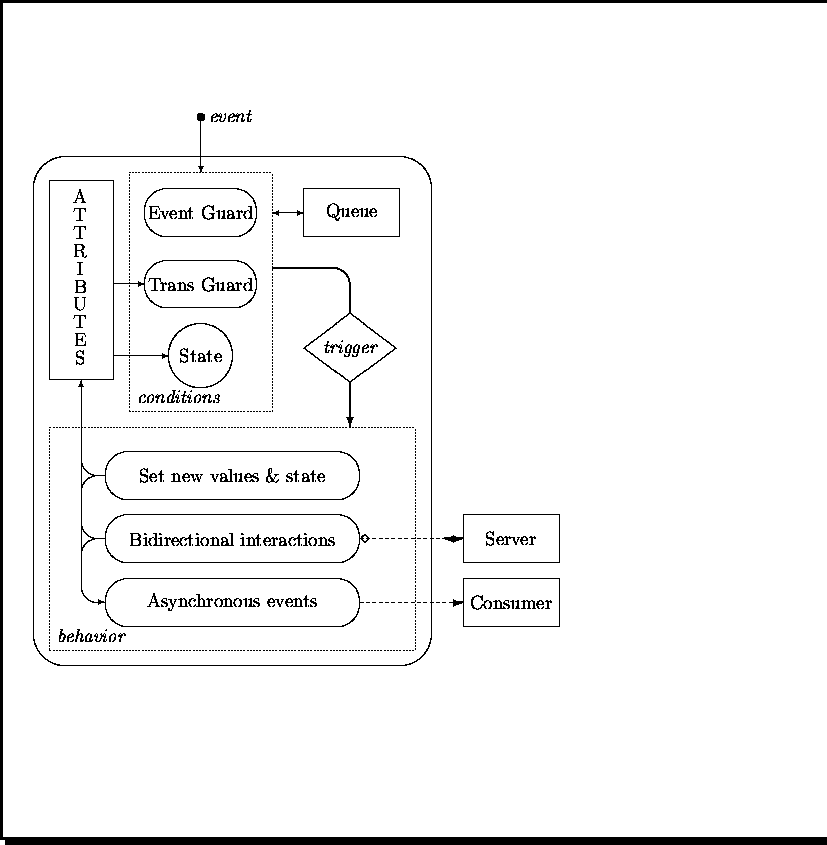
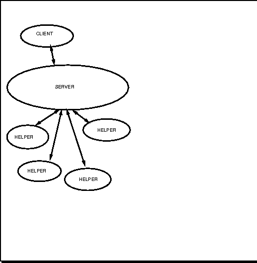

Designing Distributed Objects
HTML-ized slides from a talk on IBM CENET, 1993
by Doug Lea.
- Confluence of object-oriented and distributed systems
- Examples: Financial Systems, Real-time Systems, Large Applications,
Multimedia.
- We are still learning what they are and how to build them.
- Good techniques exist; mainly scale-ups of familiar OO methods.
- Distributed OOD also scales down, and helps to
organize and enhance even in-the-small OOD.
- Autonomous active objects
- Modeling and Functional Design
- Overview of Physical Design and Implementation
Reference: Object-Oriented System Development by Dennis deChampeaux,
Doug Lea, & Penelope Faure. Addison-Wesley, 1993.
- OO
- Objects: Instances, Classes, Inheritance
- Statics: Attributes, Interfaces, Relations
- Dynamics: States, Transitions, Methods, Message Passing
- Distributed
- Processes, tasks, threads, messages, RPC, ports, routing
- Active Objects
- Each object is a single-threaded process-like entity
that can perform at most one action at a time.
- Objects concurrently interact to form larger-grained systems.

- High-level OO modeling and design intrinsically
(but implicitly) employs active object models.
Examples: CRC cards, OMT, timethreads ...
- Most OO concepts and methods apply more easily
to active than passive objects.
- Many standard OO design techniques hold without change under
the assumption that each object is active.
- Designs have a great amount of parallelism,
that may be exploited via distribution.
But some objects will later be clustered, passivized
and sequentialized.
- Some approaches separate
(passive) data objects from (active) processes and threads
across entire development cycle.
- Some approaches start with the assumption that the entire
system will run as a single program, and then attempt
to parallelize and distribute it.
- Some approaches focus on decomposing functions, not objects
across processes.
- Some approaches employ intra-object concurrency rather than
or in addition to inter-object concurrency.
- We steal ideas from such approaches, but believe that the
basic active object model is more fundamental, more natural,
and more fun.
- The ``membranes'' protecting active objects are more
pronounced.
- Local versus remote computation; interfaces
- Composition and delegation vs physical embedding.
- Control of conditions under which objects accept messages.
- Synchronization, interference control
- New forms of message passing
- Oneway sends, multicast, timed protocols, ...
- Larger gap between design and implementation.
- Need tools and services to manually implement OO features.
- Modeling:
Abstract declarative specifications of
externally visible objects, tasks, ...
- Functional design:
Composing concrete objects out of others in a way that
can be executed on a virtual machine substrate.
- Physical Design:
Mapping constructs onto actual computational
substrate.
- Implementation:
Reconciliation, assessment, performance tuning, ...
- Isolating steps doesn't commit to a process. Could be arranged
as spiral or whatever.
- Model-level classes are specifications
- Attributes, invariant constraints
- Relationships, relational constraints, contracts
- States, transitions, event reception and generation
- Services, tasks, timethreads, use cases, performance constraints
- Object generation, resource constraints
- Subclassing -- Property inheritance
- Classes describe families of (potential) instances in
terms of required properties.
- Subclasses describe subfamilies by strengthening properties
(adding features, constraints).
- Functional design can be conceptualized in any of several nearly
equivalent ways:
- Abstraction/refinement: Concrete classes are subclasses
describing subfamilies of modeled objects with
particular concrete commitments.
- Type: Models serve as types for concrete classes.
- Specification: Concrete classes are reifications.
- Transformational: Concrete classes are transformations
of models into the domain of software.
- Simulation: Concrete objects simulate models.
- Design steps typically add many other behind-the-scenes
classes, objects, etc., that may in turn be subject to
declarative modeling.
- Objects obtain properties by composing those of other
autonomous objects.
- Designs are architectures of static links and
dynamic targeted messages.
- Links may be termed pointers, references,
handles, ObjRefs, channels, ports, ..., and implemented
differently at different levels.
- Object possess links to helpers, not embedded subobjects.
- Subclasses extend specifications. Subclass objects
do not necessarily contain embedded superclass objects.
- Objects cannot themselves be passed in messages, only
links (perhaps along with other base
values like ints).
- OO link passing is both wonderful and horrible: Object
A can send B a link to C, allowing
B and C to communicate.

- Allocation of responsibility
- Locality, Minimizing central control
- Coordination
- Control; synchronization; Micro-architectures
- Conformance to models
- Correctness; Performance; Reliability;
- Design Safety
- Explicit, testable types and constraints
- Preserving property inheritance
- Abstract vs Concrete classes
- Message passing
- Encapsulation
- Construction
- Illustrated with ODL, a pidgin OOPL with
minimal extensions to express:
- Message acceptance control
- Non-procedural message passing
- Declarative constraints
- Abstract classes require more than signatures to propel design.
- Minimally distinguish three kinds of visible methods -- functional,
procedural, and oneway.
- Synchronization constraints may be part of intrinsic specification.
We use when guards; there are other choices.
- (Whether client objects should know and exploit these is sometimes
a matter of debate.)
class Semaphore
fn locked: bool init= false;
op wait: () when ~locked then locked' else pend end
op signal ==> ~locked' end
end
- Separation of local world from externally visible methods
- Local structure designed similarly to that in ST, C++, etc.
class Chapter
locals
prev: opt Chapter; next: opt Chapter; text: CharStream;
op printText: () { Printer$print(text.chars); }
end
op printBook { if ~null(prev) then prev.printBook
else self.printAndPropagate end }
op printAndPropagate { printText;
if ~null(next) then next.printAndPropagate end }
end
- Can specifications reveal architectures?
class CardEater
locals
beeper: Beeper;
own cardLatch: CardLatch;
end
fn holding: bool init= false;
fn latched: bool init= false;
op unlatch ==> ~latched' end
op latch ==> latched' end
op eject when ~latched /\ holding then
cardLatch.release', ~holding'
elsewhen ~latched /\ ~holding then beeper.beep'
else pend end
end
- Useful only when client doesn't care when
effects of a message hold.
- Many OO designs entail logically oneway messages.
- MVC-style notifications; constraint propagation
- Interactions with external devices.
- Asynchronous service requests (e.g., printing).
- To-whom-it-may-concern messages via relays that
choose a recipient. Examples: mouse event
handlers, service relays.
- Multiple-recipient messages via multicasters.
Examples: publish-subscribe, collections,
replicated fault-tolerant services.
- Protocol objects that pass messages without looking at them.
- Callbacks allow manual construction of protocols
midway between pure oneway and pure procedural.
- Variants: hardwired (as below), mediated,
exceptions, call-with-timeout, etc.
class BeeperTimer
local delayer: Delayer;
op alarm(secs: time, b: DelayedBeeper) {
delayer.delay(secs); b.beep };
end
class DelayedBeeper
local t: BeeperTimer;
op beep ... ;
op beepAfter(secs: time) { t.alarm(secs, self) }
end
- Larger-grained encapsulation does not come for free.
- The same dangers are present in any large design, whether
fully sequential, concurrent, or in-between.
- When objects record and pass around links to others,
it can become difficult to understand and control interaction.
- Problems
- Safety failures -- inconsistent states.
- Liveness failures -- deadlock, lockup.
- One object plays two roles in a task -- aliasing.
- Design measures
- Prevention: Communication closure
- Management: Coordination
- Logical containment and exclusive control are design policies to
obtain (nearly) independent subsystems that are easier to
construct, verify, test, compose, and think about.
- Minimizing fan-in by controlling link exports (arguments, results).
- Choosing replication over sharing when appropriate.
- Reducing reliance on identity: Service (interface) based vs
object based dispatching.
- Concepts like friend must be scaled into security and
authentication schemes constructed or adopted -- sometimes
only for the sake of design integrity, not malicious invasion.
- Some interactions cannot be isolated, so must be managed.
- Examples:
- Potential simultaneous access of scripted actions; for
example Transaction systems where two users may be trying
to step the same account through sequences representing deposits
versus withdrawals.
- Tasks that must step two different objects
through logically atomic all-or-nothing actions;
for example transferring money from savings into checking
accounts.
- Operations with guards that reference other objects
that are not under the exclusive control of recipients;
for example, automatic account transfer daemons that
trigger when all participants are in the proper state.
- Most solutions require expicit coordinator
objects that oversee interactions.
- But these require cooperation from the individual participants:
- Locking
- Change-notifications sent to coordinators
- State-saves and rollbacks; Undo operations.
- Service replication
- Nested measures for subtransactions
- These solutions can become arbitrarily heavy.
- Structural containment, even if only partial, is the
key to simpler, better designs.
- Active object construction is similar to process construction.
- Centralized facilities (e.g., global new, metaclass objects)
do not always scale well.
- For any class C we may define a generator
class CGen, that specifies details of how to construct
instances of C.
- Typically, a single generator will serve as a factory,
that constructs instances of several related classes.
- There may in fact be many instances of
CGen distributed across a system.
- (Still need one global new System to get
a system started.)
- Group objects into clusters --
``fat'' active objects with embedding constraints.
- Each cluster physically contains many objects,
each of which must be sequentialized.
- The system as a whole consists of a relatively small
number of interacting coarse-grained processes,
each with an interface representing encapsulated functionality.
- Guided by measurable quantities: throughput, process size
- Also includes intrinsically heuristic criteria:
- Keeping logically related objects physically together
- Isolation for reliability, interoperability.
- Maintainability, simplicity
- Process control
- Layering on top of system services for message passing
and routing.
- Integration with other coarse-grained systems
- Run-time backups for bad and transient object placements.
- Management of heterogeneous computational resources.
- Persistence, reliability, security.
- ...
- Passivization and performance tuning are transformations
mapping clustered objects onto program-level objects
(storage + code).
- Variants
- Classic OO passive:
Single active agent representing and executing
code on behalf of other simulated objects.
- Classic OO distributed: Multiple active agents
each handling different simulated objects.
- Multithreaded: Multiple active agents handling
overlapping sets of simulated objects.
- Persistent: Any of above with agents recovering descriptions
of objects from media, simulating methods, and
saving resulting state descriptions.
Designing Distributed Objects
This document was generated using the LaTeX2HTML translator Version 95.1 (Fri Jan 20 1995) Copyright © 1993, 1994, Nikos Drakos, Computer Based Learning Unit, University of Leeds.
The command line arguments were:
latex2html -split 0 cenetslides.tex.
The translation was initiated by Doug Lea on Mon Feb 26 07:24:32 EST 1996
Doug Lea@Mon Feb 26 07:24:32 EST 1996